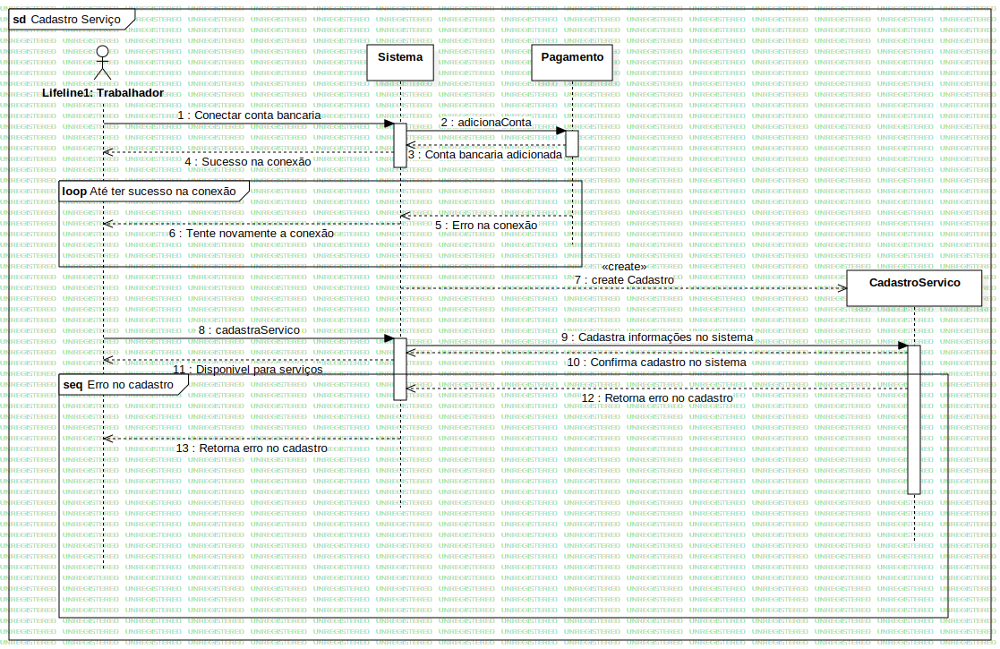

Cadastro Serviço - Interaction1
UMLInteraction
Atividade 3
::
Diagrama de Sequencia
::
Cadastro Serviço - Collaboration2
::
Cadastro Serviço - Interaction1
Description
none
Diagrams

Cadastro Serviço
Fragments
Erro no cadastro
Até ter sucesso na conexão
Participants
Sistema
CadastroServico
Pagamento
Lifeline1: Trabalhador
Messages
Conectar conta bancaria (Lifeline1→Sistema)
adicionaConta (Sistema→Pagamento)
Conta bancaria adicionada (Pagamento→Sistema)
Sucesso na conexão (Sistema→Lifeline1)
Erro na conexão (Pagamento→Sistema)
Tente novamente a conexão (Sistema→Lifeline1)
create Cadastro (Sistema→CadastroServico)
cadastraServico (Lifeline1→Sistema)
Cadastra informações no sistema (Sistema→CadastroServico)
Confirma cadastro no sistema (CadastroServico→Sistema)
Disponivel para serviços (Sistema→Lifeline1)
Retorna erro no cadastro (CadastroServico→Sistema)
Retorna erro no cadastro (Sistema→Lifeline1)
Properties
Name
Value
name
Cadastro Serviço - Interaction1
stereotype
null
visibility
public
isReentrant
true
Owned Elements
Cadastro Serviço